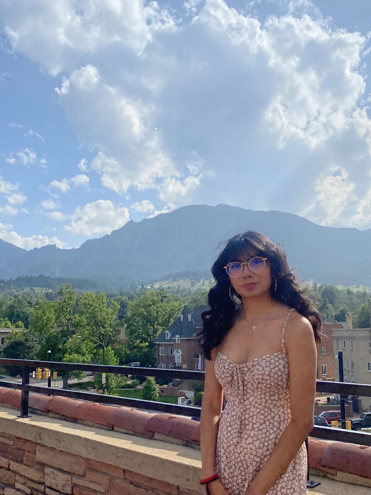

Aspiring student willing to learn more about the world of data

Who is Jasmin? Well, I am a student studying Computer Science & Information
Science with a minor in TAM at the University of Colorado Boulder. I am also
a first generation so college in my family is a big deal and it has been
one of the biggest accomplishment. On my free time, I enjoy watching Anime or
playing video games, hanging out with friends, or going on late night adventures.
My goal for this class to be able to create a website! Step 1 completed, it may
be a professional website but we are taking baby steps! I have had looked through
website template and dissect the HTML code to mess around with the settings, but
I want to be able to understand all of the proper commands. Hopefully towards
the end of this class I will be able to have a better understanding of HTML.
Do you like Minecraft? I sure do, check out my encyclopedia: MineWiki